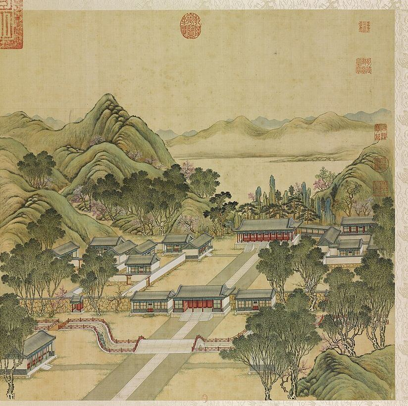

正大光明


概况
正大光明殿是雍正帝即位（1723）后在园南所建的听政正殿，“構殿于園之南御以聴政”（S05 j80:2b）；马龙（Malone）定为1725年（S02）。自影壁北行，辇道两侧为前湖，经五间大宫门（门前东西朝房各五间，门后为各部院直房，E2101），再过月牙形河上的三座石桥，至五间二宫门出入贤良门，武职侍卫在此引见、较射，西南为茶膳房，东南为军机处（S05 j80:9a-b；E1000）。门内为七间正大光明殿，东西配殿各五间，后为寿山殿，东为洞明堂。此殿用于朝会、正月筵宴、考试和庆贺，直到咸丰年间（E1182；E1023；E1557）。1860年10月6日至8日英法联军进园抢掠（S02 pp.179-183）；10月18日至19日英军奉额尔金之命焚园，英军驻扎于此殿，19日下午约三时最后将其焚毁（E1028；E1007）。
1744年四十景图及御制诗序
《圆明园四十景图》第一幅（P0001）。乾隆帝诗序称此殿为园中正衙，“不雕不繪得松軒茅殿意”，殿后峭石壁立如玉笋，前庭虚敞，墙外花木红紫层叠（S40；E0995）。诗中以畅春园为规范，倡导节俭，并注明出入贤良门匾额为其父雍正帝所书。
1860年以前的变化
The plain hall of 1744 was dressed up later: a terrace 月台 with four censers was added between 1775 and 1793 (S119, params.json), and by the end of Qianlong's reign, Malone writes, the columns were red, with dragon capitals and gilt wire over the frieze (S02 pp.75-76, E1009), though Barrow saw no capitals in 1793 (E1026). Macartney's gifts were set up in the hall in 1793 (S02 p.76, E1008; Barrow E1026) and the Dutch embassy was received here in 1795 (E1007). Jiaqing let Han officials of the first two ranks into the Mongol princes' New Year banquet from 1802 (S202 j15, E1182) and moved the re-examination of successful clansmen here from 1814 (E1022); Daoguang moved the palace re-examination of new graduates here from 1844 (E1023). In 1801 the 南书房 Nan Shufang, the Southern Study, got a four-bay room near the Council office (S202 j4, E2124). By 1860 a large painting of the gardens hung on the left (west) wall as one entered, where S05 records a 豳风图 Binfeng tu (S05 j80:10b; E1030, E1031).
Only one Yangshi Lei sheet of the hall was found open: 样001-4 正大光明白差准底 (NLC, undated, 520x210 mm). Its figures, read in the mhymy transcription, give the bays: central 1丈6尺1寸5, next two 1丈5尺1寸, four end bays 1丈3尺5寸, verandas 6尺, 金柱 depth 3丈8尺, so seven bays of about 32.1 m plus verandas, about 36 x 16 m overall (1 尺 = 0.32 m); the rear veranda walled in, verandas on three sides, ten door-screen sets front and back, a throne canopy 7尺4寸 x 1丈2尺 at the back of the central bay (S310 rec. 10451; E1016). The record says the verandas on three sides agree with the 1744 leaf (P0001). The 初编 holds pp.13-31 on 正大光明 (E1015), not seen.
逐座建筑
| 建筑 | 开间 | 屋顶 | 层数 | 朝向 | 来源 |
|---|---|---|---|---|---|
| 出入贤良门 Churu Xianliang Men | 5 | 歇山 on the gate hall; wings gabled, lower | 1 | S | S01, S02, S05, S08, S337 |
| 出入贤良门前石桥 Churu Xianliang Men qian shiqiao | N-S | S02, S05, S08, S211, S245 | |||
| 内朝房 Nei chaofang | 5 each | 1 | S01, S05, S42 | ||
| 军机处 Junji Chu | 1 | S02, S05 | |||
| 清茶房 Qingcha Fang | 1 | S01, S05 | |||
| 茶膳房 Chashan Fang | 1 | S01, S05 | |||
| 翻书房 Fanshu Fang | 1 | S05 | |||
| 正大光明殿 Zhengda Guangming Dian | 7 | 歇山 hip-gable, single eaves; the ridge reads as rolled 卷棚 | 1 | S | S01, S02, S05, S06, S08 |
| 东西配殿 Dong Xi peidian | 5 each | 1 | E|W | S01, S05 | |
| 寿山殿 Shoushan Dian | 1 | S05 | |||
| 洞明堂 Dongming Tang | 1 | S01, S05 | |||
| 寿山 Shou Shan | S01, S02, S05, S08, S42 | ||||
| 前湖 Qian Hu | S01, S02, S05 |
另有10座地盘图上未注名称的建筑
图像
1745年木刻

1750至1792年水粉

1887年石印本

今日


其他图像


版权所限，请至收藏方查看
- 凯宴成功诸将士于正大光明殿 Victory banquet at 正大光明殿, print from 平定回疆得胜图 (10 plates); also an album leaf of 1828-29 shown at Hong Kong 查看： britishmuseum.org
室内
S05 j80:10b: Yongzheng's couplet '心天之心而宵衣旰食 樂民之樂以和性怡情', Qianlong's couplet '遹求寜觀成無逺弗届 以對時育物有那其居', the 無逸 Wuyi chapter on the east wall and a 豳风图 on the west. Barrow (1793) measured the room 110 x 42 ft and 20 ft high, with a ceiling painted in circles, squares and polygons, a grey marble floor, two rows of columns, red pillars at the throne recess and a throne of wood like mahogany (E1026); Macartney saw windows on one side only and the throne opposite (E1008). In 1860 the witnesses describe a polished marble floor, a carved throne on a low dais with three flights of steps (Swinhoe found it lesser wood painted as ebony), books in yellow silk, enamel bowls and French clocks, and a great painting of the gardens on the left wall, or at one end in M'Ghee (Swinhoe pp.294-295, E2105, E1030; Wolseley pp.234-235, E1031, E1032; M'Ghee p.204, E1029; Varin pp.232-233, E2122). Hérisson's carved ironwood columns and yellow tiles stand alone and are not trusted (E1027).
园林环境
Behind the hall rose 寿山 Shou Shan, a steep rock hill (屋後峭石壁立玉筍嶙峋, S40 in S05 j80:11a, E0995), with pines and a rockery (S02, E1009); behind that a pond crossed by a pebbled path and bridge on the way to the island of 九洲清晏 (Swinhoe pp.296-298, E1037; Wolseley pp.235-236, E1038). The court of the 大宫门 had guard-houses on three sides, carved and roofed with coloured tiles, with small beasts on the eaves in red, white, green, blue and gilt (Wolseley pp.231-232, E2109); the hall stood at the far side of a long flagged court, with a wire net under its eaves against birds (Wolseley pp.232-233, E1033; Swinhoe, E2105). A pair of large bronze lions stood on pedestals on either side of the road to the gate (Wolseley, E2123; Varin, who gives white marble pedestals, E2122). The road from the spirit wall ran between the two halves of the Front Lake to the gate (S05 j80:7b, E0999; E2114).
现存
正大光明殿遗址今为草地，残存成行石块，殿后寿山假山尚存（P0363）；前湖保留低矮石岸（P0396）。勘探报告称自大宫门至正大光明殿为三进院落，南北长370米（S102，E1017）。2012年以来的发掘中，大宫门遗址发现门殿、东西配门、金水桥及河道，计划保护展示（E0363，S132，E2120）。
考古与勘测
我们读到的资料中未见其遗址的发掘或勘测。
他人的复原
现代诠释，不是证据，本项目不据以定尺寸或位置。
- 再现·圆明园——正大光明 (贺艳 (清华大学, as the extract states), paper figure) 查看： mhymy.com
- “再现圆明园” 数字导览系统: 12 scenes, 40 planned (郭黛姮 team; 孙慧皎 (清城睿现) on the technical side, AR/VR) 查看： tsinghua.edu.cn
- Abb. 16, 正大光明 Zhengda Guangming (Szene 101), Lageplan und Grundriss (Shuang Zhang, drawing) 查看： doi.org
- 圆明园--正园（正大光明殿） (yyb666, game or community build) 查看： sketchfab.com
- 重现圆明园之正大光明 (星垂野阔大江流, drawing) 查看： bilibili.com
- 时光巴士, hydrogen XR bus with transparent screens (Jeff Smith and Steve Petersen, Chrono Craft, AR/VR) 查看： arinsider.co
已知尺寸
| 部位 | 项目 | 尺寸 | 方法 | 等级 | 来源 |
|---|---|---|---|---|---|
| 正大光明 区域, three courts from 大宫门 to 正大光明殿, between the 如意门 gates | Court depth | 370 m ± 10 | a 测绘或清代图档 | B | S102, mhymy 12324, report opening; as recorded in E1017 |
| 正大光明 区域, whole | Court width | 310 m ± 10 | a 测绘或清代图档 | B | S102, mhymy 12324; E1017 |
| main hall, inside | Depth | 12.8 m ± 2 | a 测绘或清代图档 | B | S251, pp.124-125 (E1026) |
| main hall, inside | Frontage | 33.53 m ± 3 | a 测绘或清代图档 | B | S251, pp.124-125 (E1026) |
| 正大光明殿 | Depth | 12.16 m ± 0.05 | a 测绘或清代图档 | A | S310, NLC 样001-4 正大光明白差准底 (undated), slip text quoted on mhymy record 10451 |
| 正大光明殿 | Frontage | 35.95 m ± 0.3 | a 测绘或清代图档 | A | S310, NLC 样001-4 正大光明白差准底 (undated), slip text quoted on mhymy record 10451 |
| court inside 大宫门 | Court width | 91.4 m ± 20 | e 无测绘依据 | C | S242, p.203 (E2104) |
| main hall | Frontage | 45.72 m ± 8 | e 无测绘依据 | C | S02, p.76 (Macartney 1793 quoted, E1008) |
| the scene's outline on the plan | Extent, long side | 149 m ± 10 | b 地盘图或遗址 | C | S01, layers/scenes_1860, UTM 50N, minimum rotated rectangle |
| the scene's outline on the plan | Extent, short side | 140 m ± 10 | b 地盘图或遗址 | C | S01, layers/scenes_1860, UTM 50N, minimum rotated rectangle |
| the scene's outline on the plan | Area | 14900 m² ± 1500 | b 地盘图或遗址 | C | S01, layers/scenes_1860, UTM 50N, polygon area |
全部20个数字
| 部位 | 项目 | 尺寸 | 方法 | 等级 | 来源 |
|---|---|---|---|---|---|
| main hall, inside | Ceiling height | 6.1 m ± 1 | a 测绘或清代图档 | B | S251, pp.124-125 (E1026) |
| 正大光明殿 | Bay width | 5.168 m ± 0.05 | a 测绘或清代图档 | A | S310, NLC 样001-4 正大光明白差准底 (undated), slip text quoted on mhymy record 10451 |
| 正大光明殿 | Clear depth | 11.728 m ± 0.05 | a 测绘或清代图档 | A | S310, NLC 样001-4 正大光明白差准底 (undated), slip text quoted on mhymy record 10451 |
| 正大光明殿 | End bay width | 4.32 m ± 0.05 | a 测绘或清代图档 | A | S310, NLC 样001-4 正大光明白差准底 (undated), slip text quoted on mhymy record 10451 |
| 正大光明殿 | Overall depth | 16 m ± 0.3 | a 测绘或清代图档 | A | S310, NLC 样001-4 正大光明白差准底 (undated), slip text quoted on mhymy record 10451 |
| 正大光明殿 | Porch depth | 1.92 m ± 0.05 | a 测绘或清代图档 | A | S310, NLC 样001-4 正大光明白差准底 (undated), slip text quoted on mhymy record 10451 |
| 正大光明殿 | Secondary bay width | 4.832 m ± 0.05 | a 测绘或清代图档 | A | S310, NLC 样001-4 正大光明白差准底 (undated), slip text quoted on mhymy record 10451 |
| main hall | Rock peaks height | 12 m ± 6 | c 绘画按模数 | C | S08, P0001, combo ym01 cell 33 |
| water inside the scene's outline | Water inside the outline | 1000 m² ± 100 | b 地盘图或遗址 | B | S01, layers/water_1860 within layers/scenes_1860 |
本页引用的资料 (17)
- S01 Plan of the Yuanmingyuan Imperial Garden-Palace, unknown artist, three hanging scrolls, ink and colour on paper, 177 × 253 cm together
- S02 Carroll Brown Malone, History of the Peking Summer Palaces under the Ch'ing Dynasty, Illinois Studies in the Social Sciences XIX, Urbana 1934; reprint Paragon 1966
- S05 《日下旧闻考》 Rixia jiuwen kao (Yu Minzhong et al.), juan 80-85, Kanripo KR2k0036, WYG base
- S06 zh.wikipedia 圆明园, 圆明园四十景, 长春园, 绮春园, 西洋楼
- S08 圆明园四十景图 Forty Scenes album, Tangdai and Shen Yuan, 40 leaves, BnF Estampes RESERVE FT 6-B-9, one BnF record per leaf; poems Qianlong, calligraphy Wang Youdun
- S40 御制圆明园四十景诗 / 图咏
- S42 梦回圆明园 mhymy.com: 档案史料 reports (11301, 11446, 11467, 11480, 11559, 11828, 12205, 12324, 12600, 12613, 12739) and scene list /ymss/jqjs/ymy
- S102 《正大光明区域考古勘探报告》, 梦回圆明园 档案 page, free part only
- S119 《现存几张正大光明殿图像述评（连载·二）》, 中国圆明园学会 blog
- S132 中新网 via 中国日报网 大宫门 (2019-01-29); 新京报 via 中新网 紫碧山房 (2017-12-15)
- S202 吳振棫 養吉齋叢錄, 校點 text as held in the 殆知閣 corpus; only 卷一 to 卷十七 are in this copy, simplified characters
- S211 姚元之 竹葉亭雜記
- S242 R. J. L. M'Ghee, How We Got to Pekin: A Narrative of the Campaign in China of 1860, London: Bentley, 1862
- S245 Paul Varin, Expédition de Chine, Paris: Michel Lévy, 1862
- S251 John Barrow, Travels in China, London: Cadell and Davies, 1804
- S310 梦回圆明园 mhymy.com, 档案史料 > 样式雷图档 /dasl/ysltd/: per-drawing records (图名, 图幅, 款式, 图纸性质, 绘制年代, 收藏机构, 排架编码) with a description, for drawings held by NLC 国家图书馆善本部, 故宫博物院图书馆, 清华大学
- S337 中国人民大学清史研究所 清代皇家园林研究中心, 学术综览 (xstl, lswh, jzys, ylfj, wxda, hwyj): reposted articles, 397 listed, 121 fetched